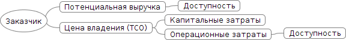
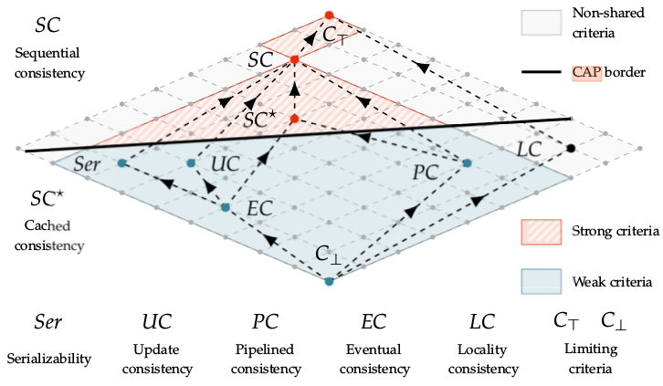
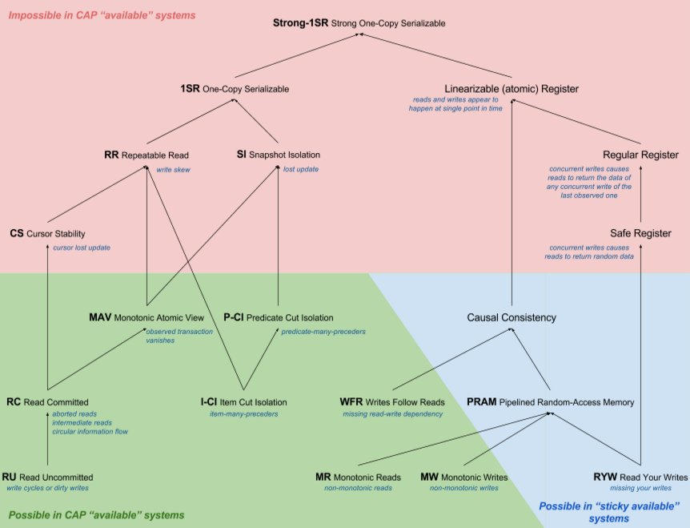
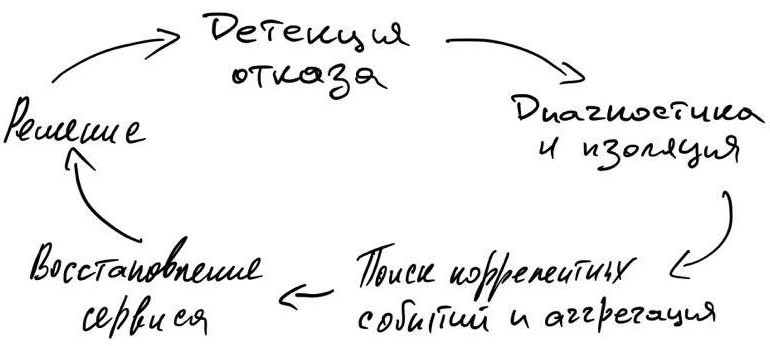

Концепции
В прошлых статьях рассмотрели причины сбоев, типичный таймлайн сбоев, какие фазы там есть и какие действия обычно требуются, что бы вернуть систему в стабильное рабочее состояние. Настало время погружаться в теорию HA глубже, но попытаться не распыляться на конкретные компоненты и решения, чтобы сохранить универсальность и иметь возможность применять их безотносительно частных случае и реализаций.
И так, проектируя HA систему, прежде всего преследуют цель построить систему, которая бы за минимальные деньги держала определенную нагрузку и лишний раз не беспокоила (что в принципе тоже деньги). Соответственно система должна быть:
-
Надежной: минимальный потенциал для сбоев.
-
Избыточной: использовать имеющиеся ресурсы, чтобы продолжать работать даже после сбоя без внешнего вмешательства.
И уже тут начинаются противоречия. Чем меньше компонентов в системе и их связанность - тем она надежней, но при увеличении избыточности увеличивается и связанность, а количество сбоев в системе растет. Почему так - рассмотрим в последующей статье - Высокая доступность: надёжность компонентов и систем.
В предыдущей статье был приведён пример расчёта влияния увеличения доступности на выручку, получаемую организацией. В подходах обеспечения HA для системы или её части следует поступать аналогичным образом, то есть доставлять доступность как новую функцию с некоторой ценностью для бизнеса и с возможность посчитать её ROI. Тем самым доступность системы будет находиться в соответствии с потребностями бизнеса, его планами и возможностями. А обоснование работ, критерии достижимости и средства будут понятны и для владельцев продукта, и для исполнителей.
Упрощенная схема влияния доступности на выручку:

При такой простой мотивации поступают также просто:
-
анализируется текущий дизайн системы на возможные отказы;
-
составляется список сценариев отказа;
-
для каждого сценария указывается вероятность отказа и урон им созданный;
-
наиболее важные сценарии для бизнеса фиксируются в требованиях;
-
проектирование решений по преодолению этих сценариев, оценивается стоимость реализации;
-
ревью решений, проверка гипотез по преодолению отказов;
-
реализация.
Потребность в высокой доступности может быть вызвана не только увеличением прибыли и уменьшения рисков, но и для соответствия определенным отраслевым и государственным стандартам и регламентам.
Основы
Отказоустойчивые системы, а значит системы с некоторой избыточностью, также являются подгруппой распределенных систем. При работе с ними инженеры иногда забывают о фундаментальных ограничениях или по привычке используют упрощенные модели, L. Peter Deutsh сформировал список из таких заблуждений в распределенных вычислениях:
-
Сеть надёжна.
-
Задержка (latency) сети равна нулю.
-
Пропускная способность бесконечна.
-
Сеть безопасна.
-
Топология не меняется.
-
Только один администратор.
-
Затраты времени на передачу равны нулю.
-
Сеть гомогенная.
Дополнение и объяснение этих заблуждений будет выходить за рамки данной статьи, но Вы сможете найти больше информации в публикации Fallacies of Distributed Computing: Explained от архитектора Arnon Rotem-Gal-Oz.
CAP теорема
В этих заблуждениях упомянули, что задержка по сети не равна нулю, что пропускная способность не бесконечна, что сама сеть не надёжна. В следствии того, что информация не может распространяться по разным узлам сети мгновенно и в любом объеме, спровоцировало появление большого количества моделей управления данными в распределенных системах, а на основе них появилась CAP теорема [cap]. Поверхностные детали теоремы рассматривать не будем, так как интуитивно простые, статьи с Wikipeda достаточно. Сложность как обычно в деталях, а именно моделях консистентности, которые будут влиять на такие характеристики системы как: латентность, пропускная способность, величину RPO, способ решения проблем конкурентности.
Модели консистентности
Существует довольно большое множество моделей консистентности, которые описывают различные подходы при работе с данными в распределенной системе и естественно с больше чем одним агентом которые с ними работают. Так как статья посвящена высокодоступным системам, то мы подразумеваем, что клиенты получают доступ к сервису без ожиданий и попыток синхронизироваться друг с другом, то есть система работоспособна даже тогда, когда доступен остался лишь один узел. Это называется wait-free атрибут распределенной системы. В следствии наличия wait-free атрибута приходится раскрывать сам факт конкурентности доступа к данным в такой системе. Так бизнес диктует свои потребности с некоторой областью возможностей, то при проектировании системы и мы может выбирать в каких случаях и как организовать проведение транзакций. Транзакций не в терминах СУБД, а в терминах предметной области, что важно.
И так, выбираем между абсолютно строгим подходом доступа к данным и состоянием постоянной неконсистентности на узлах. Более формально: самый строгий способ достижения консистентности - использовать лишь один объект с данными и организовать последовательный доступ к нему, ни о каком wait-free там естественно речи быть не может в случае более одного клиента. Ослаблять требования этого способа можем через смягчающий критерий - раскрытие деталей конкурентной работы с данным, тем самым выстраивая правила (протокол) работы с ними и тем самым допуская случаи появления неконсистентности в данных. Под протоколом подразумевается нахождение консенсуса для линеаризации проводимых транзакций и нахождения консенсусов.
Ниже представлена решетка моделей консистентности от самого слабого критерия до сильного. Граф разделён CAP границей, всё что ниже неё может использовать в wait-free системах, всё что выше - нет.
Решётка моделей консистентности[ds1e]:

Как видно из изображения в wait-free системе могу быть реализованы: update consistency модель, eventual concistency, pipelined consistency.
Отдельно хочется отметить serilizability, многие инженеры ошибочно считают, что она даст возможность забыть о проблеме консистентности проведения транзакций в распределённой системе. Она строже event consistency, но всё же не исключает проблем при разделении кластера (split brain), так как гарантирует проведение изолированных серий транзакций на локальных данных, а синхронизация через shared object и арбитраж. Когда отделившийся узел возвращается в кластер, он будет вынужден вернуться к состоянию в момент сплита, либо потребует операцию по слиянию данных. Такая модель позволяет реализовать хорошие показатели производительности и предоставляет отличный контроль данных. Именно в следствии этого получила столь широкое распространение и для работы с важными данными (мед. записи, банковские транзакции), но как всегда есть нюансы.
Сверху находятся модели с жесткими критериями последовательности транзакций и линеаризацией, получается не wait-free система, но данные однозначно останутся консистентными в любой момент времени. Для более более подробного знакомства с этими моделями рекомендую заглянуть в [ds1e].
ACID
Большинство с ACID должно быть знакомо в общих чертах и даже в трактовках. Если нет - есть wiki: ACID_(computer_science). Продолжаем тему применимости принципов и моделей в построении HA систем. Ниже граф уровни изоляции транзакций (ACID) на основе CAP моделей, источник [hat] (нарисовал Alexey Grischenko): 
Что это значит:
-
граф - корень (Strong-1SR) - наивысший уровень "изоляции" транзакций (все транзакции последовательны), чем дальше от корня, тем ниже уровень изоляции транзакции, тем меньше нужно ресурсов на её проведение в распределённом приложении
-
красное - модель невозможно использовать в HA системе
-
зелёное - используется
-
синее - используется для тех случаев когда клиент работает лишь с один узлом, либо сам может выполнять роль сервера.
Практическое использование. В большинстве классических РСУБД по умолчанию используется serializable модель, иногда и как наиболее строгая, пример PostgreSQL [pgsql-tr]. Microsoft SQL Server [mssql-si] и Oracle [oracle-si] позволяют повысить изоляцию до snapshot isolation.
В принципе, когда говорят про CAP и ACID зачастую подразумевают не serializable, а linearizable консистентность. Нюанс тут в том, что большинство РСУБД используют serializable или snapshot уровни изоляции с Multivesion concurrency control (MVCC), но не способны реализовать линеаризуемость транзакций, так как это сильно снизит скорость конкурентного доступа к данным. В этом и есть неочевидный и мало кому знакомый нюанс использования этих терминов.
Те, кто уже хорошо знаком с ACID могут обратить внимание, что сериализуемые транзакции, являющиеся "эталоном" для достижения целостности и истинности данных в принципе для большой распределенной системы не подходят из-за жестких ограничений. При большом количестве узлов требует и больших затрат ресурсов, и времени, и нет толерантности к разделению(CAP). Это и вызвало появление AP NoSQL систем таких как Amazon Dynamo, Cassandra.
BASE
Обязано появлением систем на основе eventual consistency, для которых приемлемо находиться в неконсистетном состоянии какое-то время и отдавать клиенту неконсистентные данные, тем самым сохраняя доступность. BASE - Basically Available, Soft state, Eventual consistency. По графу моделей консистентности видно, что они не такие жесткие как системы на serializable модели. Пример BASE-баз данных: CouchDB, Amazon SimpleDB, Amazon Dynamo, Riak.
PACELC
Ещё одна post-CAP теорема, а фактически её расширение. Созданное, чтобы в общую модель добавить современные NoSQL решения. Была предложена в работе "Consistency Tradeoffs in Modern Distributed Database System Design" [abadi]. Трактовка из оригинала:
A more complete portrayal of the space of potential consistency tradeoffs for DDBSs can be achieved by rewriting CAP as PACELC (pronounced “pass-elk”): if there is a partition (P), how does the system trade off availability and consistency (A and C); else (E), when the system is running normally in the absence of partitions, how does the system trade off latency (L) and consistency (C)?
Теперь в рамках одной теоремы можно более точно указать "классы" хранилищ и описать требования к ним. Классические ACID системы - PC/EС. Сохраняют целостность кластера (P), консистетность (С), но вынуждены жертовать доступностью и задержками ради (E) консистентности (С). Современные NoSQL, в лице MongoDB, Amazon Dynamo, Cassandra, Aerospike являются PA/EL. То есть уcтойчивы к сплитам (P), сохраняют доступность (A), но жертвуют консистентностью, ради (E) низких задержек (L).
- NOTE
-
Выше преведены модели используемые по умолчанию. Большинство современных СУБД поддерживают конфигурирование уровней коснистентности, которые могут зависеть от настроек сервера, базы, сессии. Обращайте на это внимание при работе с ними, а тем более при выборе СУБД.
Conway’s law
Отдельно хочется упомянуть Conway’s Law.
organizations which design systems … are constrained to produce designs which are copies of the communication structures of these organizations.
Строя распределённую систему - формируйте команды под задачи, а не наоборот. Иначе система будет иметь теже самые проблемы, что и здесь.
Существует множество других законов и следствий, которые прямым или косвенным образом связаны с распределенными и высокодоступными системи, но их вместить может пожалуй целая энциклопедия (например - Encyclopedia of Parallel Computing), так что здесь ограничимся лишь самыми базовыми.
Избыточность
Как ранее было описано, избыточность в системе позволяет продолжить работу после сбоя и даже без потери данных. Избыточность в компонентах системы может быть на разных уровнях, всё зависит от того для какого сценария сбоя эти избыточные компоненты предназначены. Примеры создания избыточности:
-
зеркалирование дисков - RAID [wiki_raid] или Redundant Arrays of Independet Disks
-
резервные блоки питания серверов
-
дополнительная сетевые интерфейсы, коммутаторы
-
резервные лини электроснабжения, питание серверов через источники бесперебойного питания
-
избыточность в кластере сервисов, обычно он называется высокодоступным кластером или HA cluster.
Если блок компонентов содержит в себе избыточность и может без внешнего вмешательства переключаться на избыточные (резервные) элементы который и возьмет на себя нагрузку.Такой компонент называется устойчивым к сбоям (fault-tolerant). Далее рассмотрим стратегии и прочие нюансы при переключении на избыточные элементы системы после сбоя, а также конфигурации отказоустойчивых кластеров.
Ниже рассмотрим самых популярных схем организации избыточности.
Active-Active
Один из самых популярных вариантов организации высокодоступных кластеров при построении Web-сервисов. Все узлы в активном использовании, балансировщи раскидывает трафик в зависимости от его политики (random, round robin,). В случае если один из узлов перестал отвечать балансировщик сам может перекинуть коннект на другой узел тем самым избежав потерю данных и с нулевым даунтаймом. Плюсы:
-
уменьшение даунтайма, так как фактический узел невидим для клиента
-
эффективное использование оборудования, реализация полной его ёмкости
-
легко наращивать нагрузку
-
тестирование аварийного переключения за балансировщиком менее рискованное
Минусы:
-
организация такой архитектуры сопряжена с определенными трудносятми или вообще не возможна в случае хранения состояния (сессии) на стороне сервера. Не всегда можно привязать юзеров к конкретному серверу за балансировщиком, failover также будет сопряжен с определенными проблемами.
-
возможны коллизии данных без роутинга клиентов на определенные узлы
-
следует крайне аккуратно рассчитывать запас по производительности в случае выхода из строя одного из узлов, производительность может упасть не линейно и вызвать отказ и второго узла.
Cold Standby
Один активный компонент предоставляет нужные для системы функции. Когда случается его отказ, cold standby компонент переход в режим hot и замещает предыдущий. В системе может быть более чем два компонента, тем самым повышая её живучесть. Её плюс в том, что в такой системе деградация очевидна и скорость отказов (failure reate) константна, что упрощает оценку и прогнозирование. Практически был вытеснен, остался в legacy c монолитами.
Hot Standby
В этом случае standby компонент, который защищает основной также включен. Данные на standby реплицируются с секундными интервалами. В случае отказа основного компонента происходит переключение (failover) на второй, в случае успешного переключения downtime стремится или равен нулю. Но есть следующие нюансы:
-
Из-за того, что они находятся под разной нагрузкой у них могут быть и разные скорости отказа.
-
Подразумевается, что механизм переключения абсолютно надёжен, если нет - система также подвергнется отказу
-
В случае отказа standby компонента система не затронута.
Replica Set
Вариация Hot Standby, но для СУБД. Главный узел называется primary, остальные secondary Все узлы кластера проверяют друг друга на доступность по heartbeat. В случае обнаружения недоступности primary узла инициализиуют выбор нового primary и проводят failover. Secondary узлы могут использоваться как реплики для чтения, но зависит от рекомендаций конкретных СУБД.
2N избыточность (2N Redundancy)
Схема, напоминающая Hot Standby. Все избыточные юниты проверяют доступность друг друга. В случае обнаружения, что активный (эксплуатируемый) юнит недоступен инициализируют аварийное переключение (failover). Ранее была распространена в телекоме как схема увеличения надёжности через использование аналогичного железа, но различного ПО, выполняющего теже самые функции, чтобы избежать отказа всех узлов в критически важной системе с одной и той же ошибке в ПО. Сейчас подобная схема используется преимущественно в инфраструктуре датацентров для управление питанием.
Трёх-компонентное большинство с голосованием (Triplex-Duplex)
В эксплуатации находятся три компонента, вывод от всех трёх компонентов сравнивается между собой, если один из компонентов выдаёт отличное от большинства значение, то он больше не может рассматриваться как достоверный и выводится из эксплуатации. Компоненты не подлежат ремонту во время эксплутации, только замена. Схема используется в критически важных системах: авионика, медицинские системы, системы жизнеобеспечения, индустриальные системы повышенной надёжности.
N от M
Обобщение предыдущей схемы, в эксплутации находится M параллельных избыточных компононентов, где N компонентов из них активны. Если один из N компонетов откажет и не будет предоставлять за определенное время корректный вывод, то он удаляется из схемы. Такая система отличается повышенной надёжностью, поскольку может пережить отказ множества компонентов оставаясь работоспособной в с их минимальным количеством.
Аварийное переключение (failover), стратегии и практики
Для аппаратных компонентов failover обрабатывается в драйверах системы, которые предоставляет вендор вместе с железом. Нормальная обработка такого failover не вызывает прекращение работы оборудования и не вызывает перезагрузку ОС.
Если сбой происходит в кластере, миграция между сервисами внутри него должна удовлетворять следующим критериям:
-
Прозрачность. Аварийное переключение не должно мешать работе клиентов, после восстановления. Так сбой у master/active узла в HA кластере должен повлечь переброс трафика на резервный standby узел (который становится active) и установление соединений от клиентов к этому серверу, после чего возобновляется их нормальная работа. Опционально возможно выполнение повторных процедур аутентификации.
-
Время переключения. В идеале не должно приводить к длительной остановке зависимого клиента. Так например в HA
replica setкластерах c небольшим количеством узлов secondary узлы через определенные промежутки времени опрашивают primary, если он недоступен, то выбирают (election) новый primary узел, который и принимает на себя клиентов или управляет взаимодействием с ними. Период времени (heartbeat rate) между опросами обычно настраиваемый и не больше двух минут. Таким образом, клиент, потеряв соединение с primary (по его таймауту), пытается соединиться с каким-нибудь другим узлом из кластера, который можно было бы идентифицировать как новый primary. В этом случае согласованно и рационально настроенные таймаут соединений, hearbeat rate и на клиенте имеются retry политики и backpessure подход (о них позже), то переключение на новый primary сервер должно занять максимум несколько минут и не привести к потере данных для клиента. -
Автоматизация. Переключение на избыточный узел желательно осуществлять в автоматическом режиме, для того, чтобы способствовать уменьшению MTTR. Если внутри кластера сервера имеют разные статусы, то механизм выбора главного сервера также должен запускаться автоматически.
-
Гарантированный доступ к предоставляемому сервису. После аварийного переключения клиент должен иметь доступ к тем же самым данным (но есть нюансы в виде консистентности данных на различных узлах) и тем же самым сервисам, которые предоставлялись прошлым сервером в этом кластере.
Управление отказами
Вкратце: 
Современные agile подходы с короткими циклами релизов, CI/CD практики и прочий Ops-инструментарий очень сильно упростили работу с отказами, позволяя эксплутарировать большие системы существенно меньшим количеством людей.
Чек лист для занятых эксплутацией и дизайном систем:
-
healt-check сервисов
-
сбор логов
-
регулярное сканирование сети и проверка топологии
-
политики доступов как для сотрудников, так и для самих сервисов
-
сбор метрик
-
определение пороговых значений (thresholds) для выше обозначенных метрик
-
оповещения для администраторов, сотрудников поддержки занятых в эксплутации, инцидент- трекинг сервис (PageDuty, VictorOps)
-
использование трейсинга, в том числе распределенной системы
-
автоматизация обработки отказов
-
организация дежурств, уровней саппорта, политик экскалаций
-
журнал post-mortem с отчётами о развитии крупных отказов, описание поиска решения, что сделано, чтобы предотвратить в будущем.
SLA, SLO, SLI
(Fig. 2.2. Service level agreements (SLAs) and user notion of availability) Есть несколько подходов по работе с документами связанными с доступностью системы. Различие в них не концептуальные, по связанные с бизнес-моделью организации и внутренними процессами.
| Service Level Agreement (SLA) |
договоренность об уровне сервиса (см. Математика доступности) |
| Service Level Objectives (SLO) |
цели по предоставлению уровня сервиса (внутренние требования (документы)), является более строгим набором требований чем SLA, так как нарушение последнего может привести к явным финансовым и репутационным потерям. |
| Service Level Indicators (SLI) |
метрики доступности системы |
SLI → SLO → SLI
SLA, SLO, SLI
Ключевые подходы для построения систем высокой доступности
Если вы желаете увеличить доступность системы для внешних пользователей, всегда начинайте анализ с самого верхнего уровня, чтобы не оказаться в ситуации, когда балансировщик трафика с отказоустойчивым кластером стоит за каким-то жалким единственным роутером, который работает лишь по стечению случайностей. Всегда эту проблему необходимо рассматривать именно со стороны пользователя системы или сервиса, который к ней обращается, а не изнутри.
Не экономить на самом дешевом железе
Выбирать железо стоит исходя не только из его минимальной цены за определенные возможности, а по результатам расчёта ROI где учитывается его непосредственная цена, его время эксплуатации в системе, наличие специалистов для его обслуживания, гарантийного сервиса и близость поставщиков для его замены по гарантии или для обновления.
Ответственность
Ни вендор, ни поставщик программного обеспечения, ни программисты не могут построить высокодоступную и комфортную для пользователя системы. Построение такой системы это тестирование, интеграция, испытания, верификация приложений и рабочих процессов. Наивно подразумевать, что развернув определенное ПО на рабочем контуре вы получите высокодоступную систему, так как это: максимальный MTBF и минимальный MTTR, которые доводятся до нужных значений именно отладкой рабочих процессов сотрудников. Не стоит уповать и на организацию кластеров и средства репликации данных. Без своевременных вмешательств и организации работ по выводу из состоянии деградации система не может быть отказоустойчивой и высокодоступной. Формируйте SLA, SLO, ведите SLI.
Устранение единых точек отказа (Single Point of Failure (SPOF))
Анализируйте систему на присутствие в ней элементов, выход из стоя которых может привести к невозможности продолжить исполнение даже в ограниченном режиме. Проще всего начать с анализа цепочек исполнения, зависимостей или data-flow диаграмм. Достаточно пройтись по ключевым обслуживаемым процессам, чтобы уже появилось представление о самых слабых узлах в цепочке. Но далеко не каждый компонент, представляющий собой SPOF, возможно дублировать или устранить, иногда по финансовым причинам (слишком дорогое дублирующее железо), ограничения физические (например только один вводной канал) или концептуальное ограничение (например CAP-теорема[cap])
Консолидация серверов
Вместо использования множества мелких серверов, иногда имеет смысл использовать лишь несколько, но гораздо более мощных для того, чтобы:
-
упростить топологию и уменьшить количество узлов
-
сократить затраты на обслуживание (обновление, резервное копирование и т.п.)
-
улучшить производительность из-за уменьшения затрат на передачу данных по сети
Инструментарий для виртуализации и оркестрацией серверов упрощает управление распределенной инфраструктурой, еще и с прослойкой абстракции над железом, но для части задач (такие как базы данных) или большие legacy системы, всё ещё имеет смысл.
Автоматизация и оптимазиация
Чем выше уровень автоматизации - тем меньше требуется время на операции, меньше отвественных за них. Ускорение и автоматизация цикла "сборка-тестирование" добавляет удобства для инженеров, увелчивает количество таких циклов за единицу времени, время тратится более эффективно. СI/CD подходы сильно упрощают раскатывание новых релизов по контурам, тем самым уменьшая и MTTR, и time to market (TTM).
Типовые конфигурации и общие репозитории
Унификация сильно помогает для уменьшения времени на проектирование, тестирование и развертывание новых сервисов. Общие конфигурации и артефакты сильно помогают в этом на всех стадиях от идентификации потребности, до развертывания в production. Чек-лист:
-
список рекомендованного ПО для production
-
репозиторий скриптов развертывания инфраструктуры - Infrastructure as Code
-
репозиторий артефактов (Artifactory, Bintray, GitLab)
-
реестр типовых образов (Docker Registry, Amazon ECR, GitLab Container Registry)
-
типовые шаблоны для security groups
Измерение производительности
Рассуждая о доступности какого-то сервиса для клиента, мы имеем ввиду, что все компоненты в цепочке исполнения должны иметь время реакции из конкретного временного интервала, иначе уровень сервиса для клиента может упасть до неприемлемо низких значений. Чтобы не столкнуться с непредвиденной деградацией производительности в поддержании высокодоступной системы должны быть использованы:
-
бенчмаркинг отдельных компонентов системы
-
нагрузочное или стресс тестирование - подача нагрузки на систему или её изолированную часть и замеры, чтобы определить граничные возможности системы обработать выданную нагрузку. Качество проводимого тестирования сильно зависит от возможности эмулировать паттерн нагрузки как и на боевой системе, организации замеров.
-
сбор и анализ метрик производительности во время эксплуатации, могут быть как системные метрики, так и из предметной области.
-
stability testing - продолжительное по времени тестирование, проводимое с симуляцией различных условий эксплуатации.
Результаты тестирования сохраняются с указанием версии ПО или железа, чтобы в будущем иметь возможности системы от релиза к релизу. Помогает выявить внесённые изменения, повлекшие к деградации производительности.
Последовательные и систематичные меры дадут возможность не только видеть состояние системы под нагрузкой, понимать границы той самой доступности предоставляемого сервиса, но и видеть причинно-следственные связи от изменений в самой системе или её реакцию на изменение нагрузки. Чем более похожая будет нагрузка тестовая, тем ближе будет соответствие результатам в эксплуатации. Кроме того, обладая данными о фактической производительности компонентов появляется возможность более точно рассчитать потребности в ресурсах при горизонтальном масштабировании.
Обучение и тренинги персонала
Обучайте людей пользоваться инструментами, рассказывайте об их возможностях влиять на систему, какова их роль в процессе и за что отвечают. Занятый в эксплуатации человек будет действовать более уверенно и быстро, когда он знает о своих возможностях.
Раздельные контуры
Чтобы процессы разрабокти и тестирования не влияли на саму эксплутатируемую систему необходимо разделять среды с различной их целью. Обычно используются следующие: * sandbox для разработчиков где тестируется новый софт, технологии, железо * dev контур для работы над кодом, dev-тестирования, если невозможно развернуть систему для теста на локальном компьютере инженера, в следствии этого должен относительно хорошо поддерживаться, чтобы не замедлять работу инженеров * QA контур, может быть несколько, для ручного тестирования, регрессионного, интеграционного, конфигурация ещё ближе к production. Может иметь реплицированные или восстановленные из резервных копий данные с production. * Staging - практически повторяет по топологии production и его возможности. Все изменения тестируются тут перед тем как попасть на в эксплуатационный контур. Мониторинг, сбор логов и метрик практически всегда обязателен тут. Играет важную роль для эмуляции случаев произошедших в эксплутации и проверке гипотез. * Producton - он же эксплуатационный контур. Контуров может быть несколько для создания избыточности если она требуется, раскатывают обновления в таком случае последовательно, чтобы иметь возможность быстро переключиться на резерный. Либо избыточный контур находится в другом дата-центре, чтобы иметь возможность обработать отказ всего ДЦ.
Ссылки
-
[std610] IEEE Standard Glossary of Software Engineering Terminology
-
[hadr] High Availability and Disaster Recovery: Concepts, Design, Implementation, (Klaus Schmidt, 2006)
-
[cap] CAP Theorem and Distributed Database Management Systems (Syed Sadat Nazrul, 2018)
-
[wiki_bm] wiki: Benchmark (computing)
-
[wiki_raid] wiki:RAID
-
[hat] Highly Available Transactions: Virtues and Limitations (Extended Version) (Peter Bailis, Aaron Davidson, Alan Fekete, Ali Ghodsi, Joseph M. Hellerstein, Ion Stoica, 2013)
-
[ds1e] Distributed Systems. Concurrency and Consistency (Matthieu Perrin, 2017)
-
[mssql-si] Snapshot Isolation in SQL Server
-
[oracle-si] Oracle DB. Isolation
-
[abadi] Consistency Tradeoffs in Modern Distributed Database System Design (Yale Univercity, 2012)